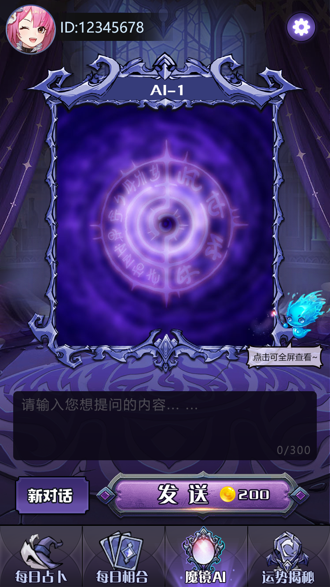
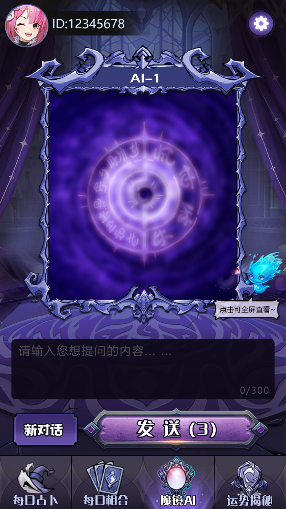
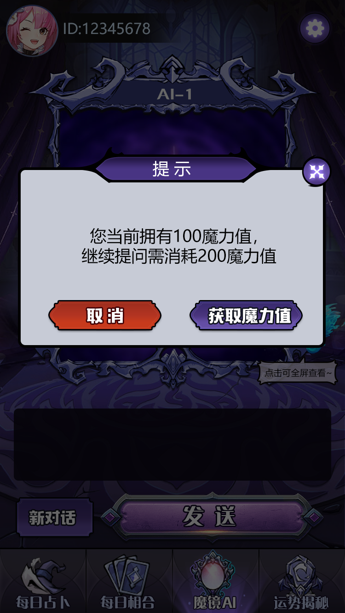
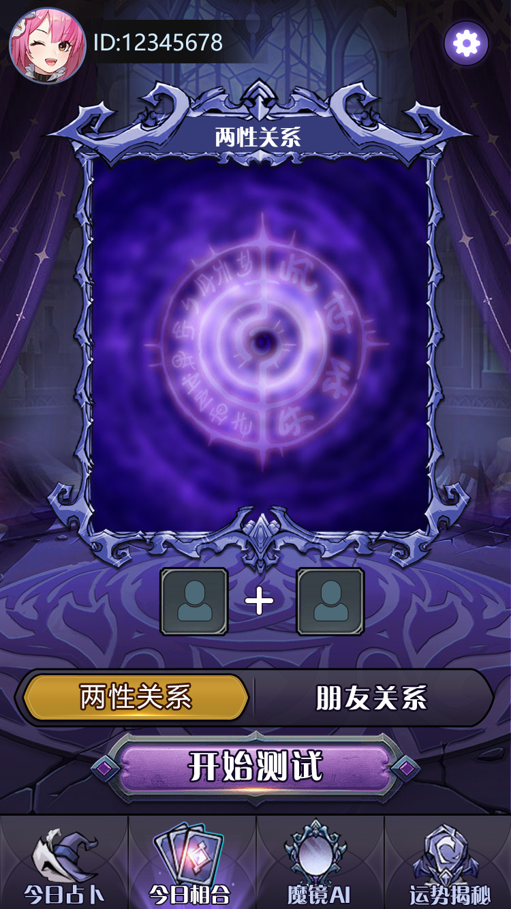

01 · MIRROR
魔镜占卜
以魔镜互动为入口，承载用户问题和占卜结果展示，适合 H5 轻量化体验。
魔镜占卜是基于 Java 后端的 H5 占卜应用，围绕用户提问、互动结果和分享传播，组织姻缘、财运、事业与综合运势等产品流程。

从一次提问开始，用户可以选择主题、得到互动结果、保存记录并生成分享海报。以下内容以线上 README 与源码仓库现有说明为基础。
以魔镜互动为入口，承载用户问题和占卜结果展示，适合 H5 轻量化体验。
提供感情主题流程，围绕关系问题呈现结果和相合分析。
覆盖财运、事业、运势等常见主题，让用户按场景进入不同结果页。
线上项目说明标注了双 AI 接口，可用于生成或丰富互动结果内容。
Java 服务端包含用户服务、操作和记录相关类，支持历史内容管理。
提供海报生成和分享方向，适配微信、百度、头条及独立 H5 场景。
这是一条适合 H5 小游戏运营的互动路径：进入主题、完成提问、查看结果、保存记录、生成海报并分享。
从魔镜、姻缘、财运、事业或综合运势进入对应入口。
用户输入问题或按页面引导完成互动，进入结果流程。
展示占卜结果与解释，便于在移动端连续阅读。
保留记录并生成海报，支持社交传播和再次回访。
以下为线上仓库 README 中的原始产品截图，已复制到本 Pages 包的本地资源目录。



核心为 Java 服务端与 H5/多平台产品流程，AI 服务需要按实际配置接入。请在合法、合规和尊重用户隐私的前提下部署，不要把占卜结果宣传为医学、法律或投资保证。
Telegram：@xuzongbin001 Email：masterai918@gmail.com